통신설비기능장 (2011-04-17 기출문제)
1과목: 임의 과목 구분(20문항)
1. 다음 중 대역확산 시스템의 특성과 거리가 먼 것은?
- 간섭 및 잡음의 영향 최소화
- 송ㆍ수신기의 동기 불필요
- 비화통신 가능
- 다중접속 가능
(정답률: 68%)

2. 다음 중 마이크로파에서 사용되는 도파관의 특성에 대한 설명으로 적합한 것은?
- 저항 손실이 크다.
- 유전체 손실이 크다.
- 복사 손실이 크다.
- 고역 여파기로 작용한다.
(정답률: 84%)
3. 방사전력이 Pr[W]인 반파장 다이폴 안테나에서 d[m] 떨어진 점의 전계세기[V/m]는?
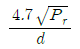
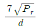
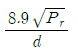
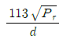
(정답률: 93%)
4. PCM 통신에서 양자화 잡음을 줄이기 위한 방법과 거리가 먼 것은?
- 압신기를 사용한다.
- 비선형 양자화를 한다.
- 저역여파기의 차단 특성을 좋게 한다.
- 양자화시 사용하는 비트 수를 늘린다.
(정답률: 76%)
5. 다음 중 TCP/IP에서 응용계층의 프로토콜이 아닌 것은?
- FTP
- TELNET
- SNA
- SMTP
(정답률: 81%)
6. 다음 중 HDLC 프로토콜의 특징이 아닌 것은?
- 전송제어 절차로 비트방식 프로토콜이다.
- 문자 동기에 의해 투명한 데이터 전송을 보장한다.
- 에러검출 방식으로 CRC를 사용한다.
- 에러제어 방식으로 Go-back-N ARQ를 사용한다.
(정답률: 75%)
7. 코어의 굴절률이 n1, 클래드의 굴절률이 n2라고 할때, 광섬유 케이블의 개구수 NA는?
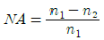
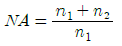
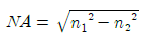
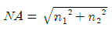
(정답률: 63%)
8. 광섬유의 도파 원리에 대한 설명으로 옳은 것은?
- 스넬의 법칙에서 전반사 원리를 이용한 것이다.
- 스넬의 법칙에서 굴절 원리를 이용한 것이다.
- 스넬의 법칙에서 흡수 원리를 이용한 것이다.
- 스넬의 법칙에서 회절 원리를 이용한 것이다.
(정답률: 88%)
9. 다음 중 1[dB]는 몇 [Neper]인가?
- 0.115
- 1.15
- 11.5
- 115
(정답률: 65%)
10. 이동통신에서 상관대역폭(coherence bandwidth)과 가장 관련이 깊은 것은?
- 음영효과
- 지연확산
- 안테나이득
- 도플러주파수
(정답률: 82%)
11. 정현파 신호로 진폭 변조한 파를 오실로스코프로 측정한 결과 최대 진폭이 35[V]이고 최소 진 폭이 5[V]인 경우 변조도는?
- 60[%]
- 65[%]
- 70[%]
- 75[%]
(정답률: 63%)
12. 다음 중 광섬유 케이블의 장점이 아닌 것은?
- 전기적 무유도현상
- 많은 중계기가 필요
- 광대역
- 초고속 대용량
(정답률: 93%)
13. 다음 중 PN 부호의 특징이 아닌 것은?
- 주기성을 갖는다.
- 주파수 대역을 확신시킨다.
- 간섭신호의 영향을 최소화시킨다.
- 주로 TDMA 방식에 사용된다.
(정답률: 79%)
14. 다음 중 QAM에 대한 설명으로 적합하지 않은 것은?
- 동기검파방식을 사용한다.
- 잡음과 위상변화에 우수한 특성을 가진다.
- M진 QAM의 대역폭 효율은 log2M[bps/Hz]이다.
- 정보신호에 따라 반송파의 주파수와 위상을 변화시키는 변조방식이다.
(정답률: 59%)
15. 다음 ( ) 안에 들어갈 내용으로 적합한 것은?
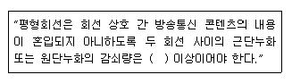
- 52데시벨
- 60데시벨
- 68데시벨
- 76데시벨
(정답률: 71%)
16. 다음 중 공통선 신호방식으로 TDX-10A 전자교환기에서 사용되고 있는 것은?
- R2 신호방식
- NO.3 신호방식
- NO.6 신호방식
- NO.7 신호방식
(정답률: 85%)
17. 다음 중 공전잡음을 경감시키는 방법으로 가장 적합한 것은?
- 접지 안테나를 사용한다.
- 지향성 안테나를 사용한다.
- 낮은 주파수를 사용한다.
- 수신기의 대역폭을 넓게 한다.
(정답률: 72%)
18. 다음 중 광섬유에 도파되는 모드(mode) 수는?
- 코어의 반경에 비례한다.
- 코어의 단면적에 반비례한다.
- 클래드의 반경에 비례한다.
- 클래드의 단면적에 반비례한다.
(정답률: 68%)
19. 다음 중 정보의 정확한 전송을 위하여 전송할 데이터의 앞부분과 뒷부분에 헤더와 트레일러를 첨가하는 과정은?
- 주소지정
- 순서지정
- 정보의 캡슐화
- 정보의 분할
(정답률: 81%)
20. 다음 중 통신위성에 설치하는 안테나가 아닌 것은?
- 파라볼라 안테나
- 혼 안테나
- 무지향성 안테나
- 루프 안테나
(정답률: 77%)
2과목: 임의 과목 구분(20문항)
21. 다음 중 OTDR의 측정과 거리가 먼 것은?
- 광섬유의 손실
- 광섬유의 접속손실
- 광섬유의 내경지름
- 광섬유의 끊어진 지점의 위치
(정답률: 82%)
22. 다음 중 라우터가 패킷을 목적지까지 전달하기 위하여 사용하는 라우팅 프로토콜에 속하지 않는 것은?
- BGP
- RIP
- BSC
- IGRP
(정답률: 66%)
23. 다음 중 IPv4와 IPv6가 주소를 표시하기 위해 사용하는 비트 수가 바르게 연결된 것은?
- IPv4 : 32비트, IPv6 : 64비트
- IPv4 : 32비트, IPv6 : 128비트
- IPv4 : 64비트, IPv6 : 128비트
- IPv4 : 64비트, IPv6 : 256비트
(정답률: 75%)
24. 다음 중 광섬유 케이블의 포설 공사시 시험측정 항목과 거리가 먼 것은?
- 접속손실 측정
- 온습도 시험측정
- 구간별 포설 후 손실측정
- 최종손실 시험측정
(정답률: 85%)
25. 무선채널에서 집중에러(Burst Error)를 분산시켜 에러정정 능력을 효율적으로 유지시켜 주기 위 한 것은?
- 엠퍼시스
- 인터리빙
- 핸드오버
- 부호확산
(정답률: 82%)
26. 광섬유에서 Rayleigh 산란손실은 빛의 파장(λ)과 어떠한 관계가 있는가?
- 2승에 비례
- 2승에 반비례
- 4승에 비례
- 4승에 반비례
(정답률: 68%)
27. 다음 중 양자화 방식에 해당되지 않는 것은?
- 선형 양자화
- 비선형 양자화
- 적응형 양자화
- 쌍곡선 양자화
(정답률: 83%)
28. 다음 중 광섬유 케이블의 기본구조 형태가 아닌 것은?
- 스트랜드형
- 리본형
- 스롯트형
- 캐비넷형
(정답률: 81%)
29. 다음 중 동기식 디지털 다중화 방식에서 STM-1의 기본 전송속도[Mbps]는?
- 1.544
- 6.312
- 155.520
- 622.080
(정답률: 63%)
30. 다음 중 펄스시험기의 원리는?
- 고장점에서 펄스의 반사가 일어나는 것을 이용한다.
- 고장점에서 펄스가가 감쇠되는 것을 이용한다.
- 고장점에서 펄스가가 소멸되는 것을 이용한다.
- 고장점에서 펄스가가 증폭되는 것을 이용한다.
(정답률: 75%)
31. 이동통신 환경에서 발생되는 페이딩과 거리가 먼 것은? (문제 오류로 실제 시험에서는 모두 정답처리 되었습니다. 여기서는 가번을 누르면 정답 처리 됩니다.)
- Short term fading
- Slow fading
- Rician fading
- Long term fading
(정답률: 74%)
32. 오실로스코프에서 동기신호로 톱니파를 이용하는 주된 이유는?
- 휘도를 조정하기 위하여
- 파형을 정지시키기 위하여
- 브라운관의 초점을 맞추기 위하여
- 파형의 위치를 상하 또는 좌우로 조절하기 위하여
(정답률: 82%)
33. 다음 중 다원 접속방식에서 이동통신 가입자 수용용량이 가장 많은 것은?
- FDMA
- SDMA
- CDMA
- TDMA
(정답률: 73%)
34. 다음 중 역L형 안테나에서 수평부의 주된 작용은?
- 복사저항을 증가시킨다.
- 실효고를 증가시킨다.
- 페이딩(fading)을 감소시킨다.
- 지표파를 강하게 한다.
(정답률: 61%)
35. 인터넷 회선 구성에 사용되는 디지털 가입자 회선(VDSL)의 변조방식이 아닌 것은?
- CAP
- DMT
- SLC
- PSK
(정답률: 73%)
36. 자유공간에서 송신출력이 동일한 조건에서 거리가 2배로 증가하면 수신신호의 세기는?
- 1/2로 감쇠
- 1/4로 감쇠
- 2배 증가
- 4배 증가
(정답률: 59%)
37. 문자 방식 프로토콜에서 사용되는 전송제어 문자가 옳은 것은?
- STX : 텍스트의 개시
- SOH : 데이터 블록의 시작
- SYN : 헤딩의 개시
- EOT : 문자의 한 블록의 종료
(정답률: 78%)
38. 특성임피던스가 균일한 선로의 종단이 단락될 때, 전압반사계수 m은?
- m = -1
- m = 0
- m = 1
- m = 무한대
(정답률: 80%)
39. FTTC 방식에서 전화국으로부터 가입자 Curb까지 전송매체는?
- 동축 케이블
- UTP 케이블
- STP 케이블
- 광섬유 케이블
(정답률: 51%)
40. 다음 중 송신측과 수신측에서 통신시스템의 비선형성으로 인하여 발생되는 잡음은?
- 백색 잡음
- 충격 잡음
- 누화 잡음
- 상호변조 잡음
(정답률: 43%)
3과목: 임의 과목 구분(20문항)
41. 다음 중 분포 정수 회로에서 1차 정수가 아닌 것은?
- 저항
- 인덕턴스
- 누설컨덕턴스
- 특성임피던스
(정답률: 76%)
42. FM 수신기에서 진폭제한기의 역할로 적합한 것은?
- 입력신호가 없을 때 수신기의 내부 잡음을 제거한다.
- 중간주파신호의 진폭을 적당한 레벨로 제한한다.
- 검파된 가청주파수 중에 포함된 전원리플을 억제한다.
- 수신되는 불요주파수를 제거한다.
(정답률: 58%)
43. IS-95 CDMA 이동통신 시스템에서 레이크(Rake) 수신기와 관련되는 다이버시티는?
- 편파 다이버시티
- 주파수 다이버시티
- 시간 다이버시티
- 공간 다이버시티
(정답률: 50%)
44. 다음 보기에서 관로내 케이블을 포설하기 위한 사전 작업의 순서로 적합한 것은?
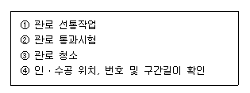
- ④→②→①→③
- ④→②→③→①
- ④→①→③→②
- ④→③→②→①
(정답률: 60%)
45. 수신기에서 증폭단 출력의 기본파 전압이 50[V], 제2고조파 전압이 1.73[V], 제3고조파 전압이 1[V]이면 종합왜율은 약 몇 [%]인가?
- 1[%]
- 2[%]
- 4[%]
- 5[%]
(정답률: 50%)
46. LAN에서 사용되는 매체접속제어(MAC : Media Access Control) 기법이 아닌 것은?
- CSMA/CD
- CDMA/CD
- 토큰버스
- 토큰링
(정답률: 72%)
47. ATM에서 셀의 헤더와 사용자 정보의 크기는?
- 헤더 5[byte], 사용자 정보 24[byte]
- 헤더 5[byte], 사용자 정보 48[byte]
- 헤더 16[byte], 사용자 정보 128[byte]
- 헤더 16[byte], 사용자 정보 2048[byte]
(정답률: 76%)
48. 광섬유의 개구수 NA(Numerical Aperture)가 갖는 의미는?
- 광섬유의 core와 clad와의 굴절율의 비
- 광섬유에 입사 전파될 수 있는 광의 입사각
- 광섬유의 손실 특성치
- 광섬유내의 전송 가능한 신호 대역폭
(정답률: 53%)
49. 다음 중 순시편이제어(IDC) 회로의 기본 구성에 속하지 않는 것은?
- 미분 회로
- 적분 회로
- 프리엠퍼시스 회로
- 리미터 회로
(정답률: 67%)
50. AM 수신기에서 중간주파수가 455[kHz]이고, 수신주파수가 720[kHz]일 때, 영상주파수[kHz] 는?
- 1455
- 1545
- 1630
- 2365
(정답률: 65%)
51. 데이터 통신에서 채널의 전송용량을 늘리는 방법으로 적합하지 않은 것은?
- 채널대역폭을 넓힌다.
- 신호세력을 높인다.
- 잡음세력을 줄인다.
- 전송속도를 높인다.
(정답률: 77%)
52. PCM에서 ISI를 측정하기 위해서 eye pattern을 이용하는데 눈을 뜬 상하의 높이는?
- 잡음의 여유도
- 신호의 정도
- 시스템의 감도
- 채널의 필터 특성
(정답률: 78%)
53. 다음 중 DPCM 송신기의 구성요소가 아닌 것은?
- 양자화기
- 예측기
- 복호기
- 부호화기
(정답률: 80%)
54. 다음 중 UTP 케이블에서 선을 꼬아서 만드는 주된 이유는?
- 중계기 없이 먼 곳으로 신호를 전송하기 위하여
- 외부적 간섭과 누화 현상을 줄이기 위하여
- 케이블의 길이를 줄여 비용을 절감하기 위하여
- 유지보수시 케이블 구분을 쉽게 하기 위하여
(정답률: 81%)
55. 로트 크기 1000, 부적합품률이 15[%]인 로트에서 5개의 랜덤시료 중에서 발견된 부적합품수가 1개일 확률을 이항분포로 계산하면 약 얼마인가?
- 0.1648
- 0.3915
- 0.6085
- 0.8352
(정답률: 57%)
56. 다음 중 계량값 관리도에 해당되는 것은?
- c 관리도
- nP 관리도
- R 관리도
- u 관리도
(정답률: 59%)
57. Ralph M. Barnes 교수가 제시한 동작경제의 원칙 중 작업장 배치에 관한 원칙(Arrangement of the workplace)에 해당되지 않는 것은?
- 가급적이면 낙하식 운반방법을 이용한다.
- 모든 공구나 재료는 지정된 위치에 있도록 한다.
- 충분한 조명을 하여 작업자가 잘 볼 수 있도록 한다.
- 가급적 용이하고 자연스런 리듬을 타고 일할 수 있도록 작업을 구성하여야 한다.
(정답률: 59%)
58. 그림과 같은 계획공정도(Network)에서 주공정은? (단, 화살표 아래의 숫자는 활동시간을 나타낸 것이다.)
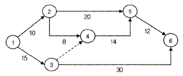
- ①-③-⑥
- ①-②-⑤-⑥
- ①-②-④-⑤-⑥
- ①-③-④-⑤-⑥
(정답률: 68%)
59. 품질코스트(quality cost)를 예방코스트, 실패코스트, 평가코스트로 분류할 때, 다음 중 실패코스트(failure cost)에 속하는 것이 아닌 것은?
- 시험 코스트
- 불량대책 코스트
- 재가공 코스트
- 설계변경 코스트
(정답률: 73%)
60. 다음 검사의 종류 중 검사공정에 의한 분류에 해당되지 않는 것은?
- 수입검사
- 출하검사
- 출장검사
- 공정검사
(정답률: 65%)